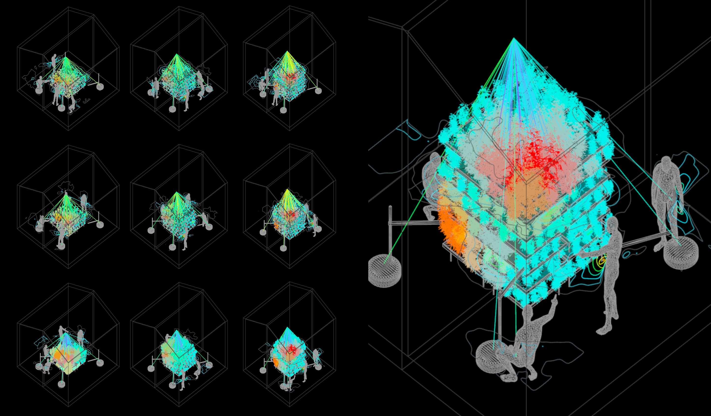
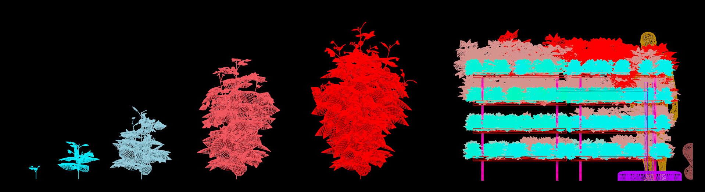
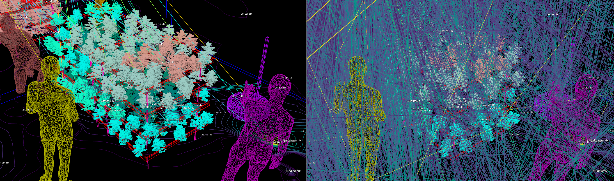

Joris Putteneers, Beau Forrez, Gilles Callebaut
Department of Electrical Engineering, KU Leuven, Belgium
Abstract
Wireless sensing for smart agriculture, such as in greenhouses and vertical farms, must operate through crop canopies whose geometry and electromagnetic properties change with growth and water content. The same propagation conditions affect sensor connectivity, radio frequency (RF) energy delivery, and the feasibility of sensing the crop through changes in the wireless channel. This paper presents HOUSIONNA, a workflow connecting procedural scene generation in Houdini with GPU-accelerated radio ray tracing in Sionna RT. Batch execution supports systematic exploration of alternative crop and infrastructure configurations. The evaluation stage combines visual inspection of paths and radio maps with application metrics for sensor coverage and RF energy harvesting. In a simulated batteryless plant-sensor use case, canopy growth lowers the median RF power at the sensor nodes by 31 dB, and the number charged within one hour from 17 of 18 to one, showing that deployments must be assessed over the crop's growth and motivating procedural modelling towards agricultural digital twins.
Index Terms: Smart agriculture, environmental monitoring, Internet of Things, sensor networks, RF energy harvesting, flexible plant sensors, wireless sensing, digital twins, ray tracing, procedural modelling.
Controlled environment agriculture relies on sensing and control to manage crop production in greenhouses and vertical farms. Spatial microclimate differences motivate measurements at multiple locations [1], while plant-mounted sensors provide observations of the crop itself. Leaf movement measurements can support studies of abiotic stress [2], and flexible sensors can monitor plant conditions [3]. An RF-powered batteryless plant movement sensor combines inertial measurements with Bluetooth Low Energy (BLE) telemetry [4]. The placement of such sensors is driven by the measurement task, which may put them deep inside a canopy. We use sensor node for a measurement device and gateway for the network infrastructure, regardless of link direction.

These applications impose different RF requirements. Active telemetry needs sufficient link margin, and batteryless operation also requires enough harvested energy per observation. Backscatter reduces the need for a sensor node to generate its own carrier [5], but requires both illumination and a return link to the gateway. Distributed wireless power transfer (WPT) depends on spatial channels and coherent combining [6]. The propagation channel can also provide observations of the environment, as illustrated by radio tomography [7]; relating channel changes to crop conditions requires crop-specific models and independent reference measurements.
The cultivation environment affects all these links. Leaves, stems, growing trays, support structures, and greenhouse surfaces alter line-of-sight visibility and multipath. Growth changes the geometry, while water content changes the electromagnetic properties of plant tissue. Measurements in a tomato greenhouse show substantial differences from conventional propagation models [8]. Deployment analysis therefore needs site-specific channels and should account for changes in the crop, device positions, and infrastructure.
Parameterised models can vary species, growth stage, spacing, leaf water content, room layout, occupancy, gateway density, and device placement without rebuilding each scene. Controlled sweeps then change selected properties while the others stay fixed, exposing placements that work for one crop configuration but fail as the canopy develops.
Existing workflows also address scene preparation and integration with Sionna RT. SionnaRT-Bridge connects Blender scene preparation, radio-material assignment, transmitter and receiver configuration, Sionna RT simulation, and result visualisation [9]. SceneBaker generates Sionna RT-ready scenes programmatically from map and terrain data [10]. Neither generates crop geometry or sweeps crop growth.
This paper presents HOUSIONNA, a workflow connecting procedural scene generation in Houdini with GPU-accelerated radio ray tracing in Sionna RT [11]. Its contribution is the combination of parameterised agricultural geometry, controlled crop and infrastructure sweeps, and analysis of sensor coverage and RF energy harvesting. The workflow integrates scene preparation and export, batch execution, run provenance, and inspection of paths, link metrics, and radio maps in Houdini or a web viewer; Sionna RT provides the electromagnetic solver [12], [13]. A batteryless plant-sensor use case brings these stages together to examine connectivity, charge time, and the choice of harvester.
Fig. 2 outlines the workflow, and Fig. 1 shows example scenes. Sections II to IV describe procedural scene generation, ray tracing, and evaluation, respectively. Section V applies the workflow to the plant-sensor use case, and Section VI discusses limitations and the steps towards an agricultural digital twin.
The first stage of HOUSIONNA constructs the agricultural environment in Houdini 22, a proprietary procedural modelling tool (the free non-commercial edition suffices) in which each scene is the output of a node network rather than a manually edited model. Exposed parameters control crop species, growth stage, plant spacing, room size, infrastructure, occupancy, and device density. The network generates the geometry and assigns material attributes per primitive (material, thickness, and water content), so these properties can vary within one scene. Measurement surfaces for radio maps are added the same way. Scene generation is deterministic: random choices use explicit seeds, so a scene is fully defined by its parameter values and can be regenerated exactly from them. Batches are organised with Houdini's Procedural Dependency Graph (PDG), which turns combinations of parameter values into work items, each producing one scene variant (Section III-C). Alternative crop layouts and infrastructure configurations therefore do not have to be rebuilt by hand, and every result can be traced back to the parameters that generated its scene.
Plants are generated with L-systems, using Houdini's L-system operator. Species-specific rules, written for this work and included in the repository [11], produce five growth stages (0–4) per species, optionally with fruit. Growth is therefore represented by a sequence of static scenes; the stages are geometric snapshots, not a validated physiological growth model. Fig. 3 shows the five growth stages of cherry tomato. Leaves are single surfaces rather than closed volumes, and their slab thickness is a material attribute (Section II-B), so paths through them are not lost to the 1 cm segment limit (Section III-B). Plants are placed on trays at a set spacing, in a room of parametric size with its structural frame, windows, sprayers, and secondary structure. People and robots are added as disturbances of the channel; an occupancy parameter and a seed set their number and positions.
Gateways and sensor nodes are points carrying their role, transmit power, antenna pattern, polarisation, and orientation. Each sensor node is attached to its plant at a seeded position, at a clearance of 2 cm from leaves, stems, and trays, and stays attached through the growth stages. Like a physical sensor, it moves with the plant, and its orientation follows the main stem, so the antenna axis and polarisation change as the plant grows. Gateways are distributed evenly over a horizontal plane above the crop at a set density per floor area, with at least one, and face downwards. Devices can also be mounted on robots or people as mobile nodes.

The built-in ITU-R P.2040 materials of Sionna are bounded in frequency [14]: apart from wood and glass, they are defined only from 1 GHz, which excludes the 868 MHz and 915 MHz bands. HOUSIONNA therefore adds frequency-dependent models and records a source, status, and valid frequency range for each material, with a warning when a run extrapolates beyond that range. The models are Cole–Cole fits of common building materials measured from 0.2 GHz to 67 GHz [15], conductors for metal structures, water and nutrient solution [16], soils [17], the dual-dispersion vegetation model for leaves [18], and a four-term Cole–Cole model of dry skin for people [19]. Material properties are evaluated at the frequency of each run or work item. Material, slab thickness, and water content are primitive attributes, so water content (% of fresh mass for leaves, default 80 %; % of volume for soils) can vary within a scene and across work items. Leaves use an assumed slab thickness of 0.3 mm. The vegetation model is not validated for the crops considered here, and fruit and growing media use placeholder values, so plant materials must be treated as provisional. ITU-R P.833 provides an independent vegetation-attenuation reference for appropriate scenarios [20]; it does not replace calibration for the specific crop and geometry.
The second stage transfers the procedural scene to Sionna RT, computes propagation paths and radio maps, and records each run for subsequent inspection and analysis.
The exporter groups triangular geometry by object name and writes meshes, a scene description, material parameters, device definitions, and solver settings.
Export checks include triangulation, object names, material consistency, and device definitions. These are checks of simulation input integrity; they do not establish biological realism or material accuracy. A preview stage loads the exported scene in Sionna and returns its geometry for inspection in Houdini.
The implementation uses Sionna RT 2.2.0. Antenna pattern (isotropic, short dipole, half-wave dipole, or the 3GPP TR 38.901 element pattern [21]) and polarisation are set per device role, as Sionna RT uses one antenna array for all transmitters and one for all receivers; orientation is set per device. The solver accepts controls for line of sight, specular and diffuse reflection, refraction, diffraction, interaction depth, sampling budget, and random seed. Enabling an interaction does not guarantee that the scene representation models the corresponding canopy physics accurately.
Sionna models interactions with surfaces: each surface a ray crosses acts as a slab with the full thickness of its radio material and counts as one interaction, so the depth limit bounds the number of leaves a path can cross. A closed canopy shell, internal sheets, and explicit leaf geometry produce different depth-dependent attenuation, and refining the mesh alone does not resolve this choice. When a leaf or stem is small relative to the wavelength, the surface approximation may miss relevant scattering. Sionna RT also discards paths with a segment shorter than 1 cm, so paths through closed objects thinner than this are lost; leaves are therefore single surfaces (Section II-A). Radio maps apply this limit only to diffraction, so thin closed objects can affect paths and radio maps differently. The slab behaviour and the 1 cm limit were confirmed with analytical reference cases included in the repository [11]. Representation and material uncertainty must be assessed together.
The solver runs in a separate Python environment, locally on a GPU or CPU or on a remote GPU host. A batch process solves each PDG work item in its own process and skips items already solved with the same settings. Run records store the exported scene, resolved materials, devices, solver settings including the seed, the work-item parameters, and software versions, so each result can be traced to its inputs.
The third stage makes the simulated channels available for inspection and application analysis. Results can be examined in Houdini or in a web viewer, while an application engine converts the propagation outputs into relevant application metrics, e.g., coverage and energy metrics.
Propagation paths are imported as polylines carrying gateway and sensor node identifiers, complex amplitudes, delays, interaction types, and object associations. Per-link outputs include path counts, coherent and incoherent gains, RMS delay spread, and frequency-response magnitudes. Radio maps provide path gain per gateway over triangular measurement surfaces. Radio maps average power over cells and do not retain phase, but under maximum-ratio transmission the local mean RF power at the sensor node is , where is the total RF power budget of the gateways. Mean RF power can therefore be evaluated over an area from the per-gateway maps. Maximum-ratio transmission assumes ideal channel knowledge at all gateways and is an upper bound for distributed operation [6].
The compressed result arrays are imported into Houdini as attributed geometry, allowing paths and radio maps to be inspected in the original scene. A web viewer built on three.js displays the same paths, radio maps, and link metrics without a Houdini installation, steps through the runs of a batch, and can be published as a read-only website, as for the use-case results of Section V [11].
The application engine converts the raw RF propagation channels between gateways and sensor nodes into metrics relevant for different applications and technologies.
1) Radio Coverage: Coverage can be evaluated at specified sensor locations or over a measurement surface using Sionna RT's radio map solver.
Per-link evaluation: explicit sensor nodes are placed at candidate sensing locations, including on leaves or within the canopy. The path solver returns the paths between each gateway and each sensor node, with the configured antenna patterns and orientations. For crop configuration , the incoherent power gain from gateway to sensor node is
where is the coefficient of path . The effective path loss to the gateway with the largest gain is in decibels. Summing path powers omits their phase cross terms, so this metric excludes fast fading. The complex path coefficients and delays can instead be used to reconstruct the coherent channel and examine constructive and destructive interference at a particular sensor position. Per-link evaluation therefore supports detailed checks of actual mounting positions and antenna orientations, but assesses only the sensor node locations supplied to the solver.
Radio maps: the solver estimates the average incoherent path gain from each gateway over cells of a measurement surface [13]. Sionna supports rectangular cells on a plane or triangular cells on a mesh; HOUSIONNA uses the latter. This provides an overview of candidate deployment regions without placing an explicit sensor node at every location. Coarse cells can conceal local shadowing, whereas finer cells resolve smaller features but require more ray samples for stable estimates.1
For either approach, coverage requires a device-specific link budget. Using the selected point gain or cell-average gain, the link margin is
where and sensor node sensitivity are in dBm (by reciprocity, the uplink uses the sensor node power and gateway sensitivity), and and are implementation losses and a design reserve in decibels. A non-negative margin indicates coverage under these assumptions. When gateway powers differ, the best gateway maximises the margin rather than the path gain alone.
Across a set of crop configurations, the worst margin tests whether every sensor location has an adequate gateway in every simulated configuration.
2) Energy Harvesting over RF: For WPT, RF power at a sensor node must be combined with a measured rectifier or harvester response. Practical responses are nonlinear, with an operating threshold, power-dependent conversion efficiency, and saturation at high input powers [23]. Measurements [24] can parameterise , which maps RF input power and frequency to usable DC power under specified load conditions.
During charging, the changing buffer voltage can also affect the conversion response [25]. For a given waveform and harvester, we therefore include the buffer voltage in the response and write the charging energy balance as
where is the required increase in stored energy from the initial state to the target operating level, sufficient for a measurement-and-transmission cycle. accounts for leakage and quiescent consumption not already included in .
The charge time is the earliest satisfying this balance and the harvester's startup requirements. Because the response is nonlinear, evaluating it at the average RF input power generally gives a different result from averaging the harvested power. Charging estimates should therefore follow the RF power and buffer state over time. For a static channel and a response measured at a single output voltage, as for datasheet curves, the balance reduces to a constant-power charge time , an approximation used in Section V.
1 A cell average does not establish that every location within that cell is covered, and reducing the cell size does not restore multipath phase interference. Moreover, Sionna RT's radio maps do not apply the configured sensor node antenna pattern or combining vector [22]. Their gains must therefore be interpreted with care when assessing a plant-mounted antenna with a particular orientation or polarisation.
The use case evaluates a batteryless plant sensor such as that of [4] in a simulated cultivation room. The sensor harvests energy at 915 MHz and reports over BLE at 2.437 GHz. Four sweeps are run over growth stages 0–4: the carrier frequency (868 MHz, 915 MHz, 2.437 GHz, and 5.18 GHz), the plant species, the gateway density, and the leaf water content.
Crop and Cultivation Environment. The scene is a 4.8 m by 4.8 m cultivation room with trays on legs, a structural frame, sprayers, and windows (Fig. 4). Unless swept, the crop is cherry tomato, whose canopy reaches 0.14 m, 0.33 m, 0.56 m, 0.91 m and 1.17 m above the tray base in stages 0 to 4. Leaves use the provisional vegetation model of Section II-B with 80 % water content and a slab thickness of 0.3 mm; stems are omitted. The concrete floor uses the ITU-R P.2040 model [14], extrapolated below 1 GHz.

Sensor Node and Gateway Locations. Each stage is a bed of 18 plants with one sensor node per plant, attached 2 cm from leaves, stems, and trays, so its own plant does not trigger the 1 cm segment limit (Section III-B). Sensor nodes with another surface within 1 cm towards a gateway are excluded, up to three of the 18 in stage 4. Gateways 2 m above the trays, facing down, power the sensor nodes and collect their reports: one by default, and 1 to 23 when the density is swept from one per 30 m2 to one per 1 m2.
Simulation and Device Settings. Each scene is traced with line of sight, specular reflection, refraction, and diffraction, up to eight interactions per path, samples and at most paths per transmitter, and seed 42. The sensor nodes use half-wave dipoles aligned with the main stem; the gateway uses a vertically polarised TR 38.901 element pattern. Sensor nodes are traced as transmitters; with fixed antennas, reciprocity lets the same gains serve the power transfer and the uplink. The gateways provide 30 dBm in total at 915 MHz; several gateways transmit coherently with maximum-ratio transmission (Section IV-A). The BLE uplink uses 0 dBm at the sensor node, a sensitivity of −95 dBm at the gateway, and a 10 dB reserve. Two commercial harvesters are compared at the same RF powers (Fig. 5): the e-peas AEM40940, designed for low input powers, and the Powercast P1110B, designed for higher ones. Their DC output is modelled by quadratic fits to the curves of [24]. No power is harvested below the lowest data point, at −20 dBm for the AEM40940 and −5 dBm for the P1110B, or where a fit is negative. As the curves are given at a single output voltage, the time to charge a 346 µF buffer from 0.05 V to the maximum storage voltage of 4.5 V for the AEM40940, and to the maximum output voltage of 4.2 V for the P1110B, is approximated at constant power as , neglecting leakage and cold start.
| Gain (dB) | BLE | Within 1 h (of 18) | ||||
|---|---|---|---|---|---|---|
| Stage | Median | Worst | (dB) | (dBm) | AEM40940 | P1110B |
| 0 | −36.1 | −48.7 | 24.3 | −6.1 | 17 | 9 |
| 1 | −47.9 | −57.8 | 14.4 | −19.9 | 8 | 1 |
| 2 | −51.4 | −59.2 | 8.7 | −21.6 | 7 | 1 |
| 3 | −52.5 | −66.9 | 7.6 | −24.2 | 5 | 1 |
| 4 | −64.3 | −102.0 | −20.4 | −36.9 | 1 | 0 |
Table I summarises the growth stages of the frequency sweep at 915 MHz. Growth dominates: from stage 0 to stage 4, the median gain drops by 28 dB and the median RF power from −6.1 dBm to −36.9 dBm. Over all stages, the median gain is −52.0 dB at 915 MHz (−51.4 dB at 868 MHz) and drops by 10.1 dB at 2.437 GHz and by 18.3 dB at 5.18 GHz, which is 1.6 dB and 3.3 dB more than free-space scaling: the canopy attenuates more at higher frequencies.
Energy limits the sensor nodes first, and it depends on the harvester. With the AEM40940, whose data start at −20 dBm, 17 of the 18 sensor nodes charge the buffer within one hour in stage 0, but only 8 in stage 1 and a single one in stage 4. The P1110B needs −5 dBm and charges 9 sensor nodes in stage 0 and at most one in the later stages; above this threshold it charges the buffer within minutes, so its counts are set by the input threshold, not by the target voltage. The BLE uplink keeps at least 7.6 dB beyond the reserve up to stage 3, but in stage 4 the worst sensor node falls 20.4 dB short and one has no path at all.
More gateways help while the canopy is open. With 23 coherently combined gateways, all 18 sensor nodes charge within one hour with the AEM40940 in stages 0 to 2, against 17, 9, and 7 with one gateway in the same sweep, but in stage 4 only 2 of the 16 sensor nodes that are not excluded do: the dense canopy, not the number of gateways, then limits power delivery. The species matters as much as the stage: the median RF power under butterhead lettuce stays near −17 dBm in every stage, whereas it falls by 11 dB for sweet basil, 18 dB for strawberry, and 29 dB for cherry tomato. Leaf water content between 20 % and 90 % changes the median gain by at most 2 dB, as 0.3 mm leaves are electrically thin, and the number of charged sensor nodes by at most two. Runs with identical inputs and seed are not bit-identical on the GPU; between such runs, the count differs by at most one sensor node.
HOUSIONNA connects procedural scene generation, GPU radio ray tracing, batch execution, inspection of paths and radio maps in Houdini and a web viewer, and an application engine for communication and WPT metrics. This provides a practical basis for studying the RF infrastructure serving agricultural sensors across changing crop configurations. In the use case, canopy growth, species, and gateway density changed which sensor nodes could be powered, whereas leaf water content barely did. One solver limitation holds independently of the scene: the path solver discards paths through closed structures thinner than 1 cm, which affects sensor nodes mounted directly on leaves.
Towards an Agricultural Digital Twin. Procedural simulation supports controlled comparisons and reproducible scenario generation, but a digital twin also requires a maintained relationship with the physical environment. In this setting, that relationship would connect observed crop geometry and operating conditions to calibrated RF materials, antenna models, and validated predictions. Periodic updates could then test whether an existing network remains adequate as the crop develops.
None of the results has yet been compared with measurements. Three limits are particularly relevant. First, the present vegetation materials are provisional, and surface-based canopy representations need evaluation across the intended frequencies, in particular for thin leaves; stems are not modelled. Second, the antenna models are ideal patterns: they do not capture plant-mounted antenna detuning or efficiency, and each device has a single antenna element, so array-based power delivery is not modelled. Third, a sequence of static scenes does not provide continuous state estimation or validated dynamic sensing.
Sionna RT supports differentiable modelling [12], [13], but the file-based wrapper described here does not provide an end-to-end differentiable Houdini pipeline. Gateway placement can be compared by searching subsets of candidate positions on precomputed channels; gradient-based material fitting or continuous placement would need a deliberate integration with the solver. Protocol performance, backscatter modulation, and RF crop inference likewise remain separate modelling tasks.
This work was supported by KU Leuven Internal Funds through HYROPA (CELSA/26/011) and a Starting Grant (STG/25/045), and by the Smart Networks and Services Joint Undertaking (SNS JU) through the European Union's Horizon Europe programme under AMBIENT-6G (Grant Agreement No. 101192113) and SUSTAIN-6G (Grant Agreement No. 101191936). For the purpose of open access, the authors have applied a CC BY public copyright license to any Author Accepted Manuscript version arising from this submission.
[1] J. Šalagovič et al., "Microclimate monitoring in commercial tomato (Solanum Lycopersicum L.) greenhouse production and its effect on plant growth, yield and fruit quality," Frontiers in Horticulture, vol. 3, 2024, Art. no. 1425285. DOI: 10.3389/fhort.2024.1425285
[2] B. Geldhof, J. Pattyn, D. Eyland, S. Carpentier, and B. Van de Poel, "A digital sensor to measure real-time leaf movements and detect abiotic stress in plants," Plant Physiology, vol. 187, no. 3, pp. 1131–1148, 2021. DOI: 10.1093/plphys/kiab407
[3] Y. Lu et al., "Multimodal plant healthcare flexible sensor system," ACS Nano, vol. 14, no. 9, pp. 10966–10975, 2020. DOI: 10.1021/acsnano.0c03757
[4] J. Cappelle et al., "RF-Powered Batteryless Plant Movement Sensor for Precision Agriculture," in Proc. IEEE SENSORS, 2025, pp. 1–4. DOI: 10.1109/SENSORS59705.2025.11330430
[5] V. Liu, A. Parks, V. Talla, S. Gollakota, D. Wetherall, and J. R. Smith, "Ambient backscatter: Wireless communication out of thin air," in Proc. ACM SIGCOMM, 2013, pp. 39–50. DOI: 10.1145/2486001.2486015
[6] G. Callebaut, J. Van Mulders, B. Cox, L. Van der Perre, L. De Strycker, and F. Rottenberg, "How to perform distributed precoding to wirelessly power shelf labels: Signal processing and measurements," in Proc. IEEE SPAWC, 2024, pp. 526–530. DOI: 10.1109/SPAWC60668.2024.10693966
[7] J. Wilson and N. Patwari, "Radio tomographic imaging with wireless networks," IEEE Trans. Mobile Comput., vol. 9, no. 5, pp. 621–632, 2010. DOI: 10.1109/TMC.2009.174
[8] D. Cama-Pinto, M. Damas, J. A. Holgado-Terriza, F. Gómez-Mula, and A. Cama-Pinto, "Path loss determination using linear and cubic regression inside a classic tomato greenhouse," Int. J. Environ. Res. Public Health, vol. 16, no. 10, 2019, Art. no. 1744. DOI: 10.3390/ijerph16101744
[9] F. Oliveira Ribas, SionnaRT-Bridge: A Blender workflow for radio-propagation simulation and visualization, Zenodo, version 1.8.2, Sep. 3, 2026. DOI: 10.5281/zenodo.20125209
[10] H. Lyu, M. Kim, S. Park, and H. J. Yang, SceneBaker: Radio-Ready Scene Generation for Sionna Ray-Tracing, Aug. 5, 2026. arXiv: 2608.04546 [eess.SP].
[11] J. Putteneers and B. Forrez, HOUSIONNA: Houdini to Sionna RT, version 1.0, Nov. 13, 2026. [Online]. Available: https://github.com/HyROPA/HOUSIONNA
[12] J. Hoydis et al., "Sionna RT: Differentiable Ray Tracing for Radio Propagation Modeling," in Proc. IEEE Globecom Workshops, 2023, pp. 317–321. DOI: 10.1109/GCWkshps58843.2023.10465179
[13] F. Aït Aoudia, J. Hoydis, M. Nimier-David, B. Nicolet, S. Cammerer, and A. Keller, Sionna RT: Technical report, 2025. arXiv: 2504.21719v3.
[14] ITU-R, "Effects of building materials and structures on radiowave propagation above about 100 MHz," International Telecommunication Union, Recommendation P.2040-3, Aug. 2023. [Online]. Available: https://www.itu.int/rec/R-REC-P.2040-3-202308-S/en
[15] S. S. Zhekov, O. Franek, and G. F. Pedersen, "Dielectric Properties of Common Building Materials for Ultrawideband Propagation Studies [Measurements Corner]," IEEE Antennas and Propagation Magazine, vol. 62, no. 1, pp. 72–81, 2020. DOI: 10.1109/MAP.2019.2955680
[16] H. J. Liebe, G. A. Hufford, and T. Manabe, "A Model for the Complex Permittivity of Water at Frequencies below 1 THz," International Journal of Infrared and Millimeter Waves, vol. 12, no. 7, pp. 659–675, 1991. DOI: 10.1007/BF01008897
[17] ITU-R, "Electrical characteristics of the surface of the Earth," International Telecommunication Union, Recommendation P.527-6, Sep. 2021. [Online]. Available: https://www.itu.int/rec/R-REC-P.527-6-202109-I/en
[18] F. T. Ulaby and M. A. El-Rayes, "Microwave Dielectric Spectrum of Vegetation—Part II: Dual-Dispersion Model," IEEE Transactions on Geoscience and Remote Sensing, vol. GE-25, no. 5, pp. 550–557, 1987. DOI: 10.1109/TGRS.1987.289833
[19] S. Gabriel, R. W. Lau, and C. Gabriel, "The dielectric properties of biological tissues: III. Parametric models for the dielectric spectrum of tissues," Physics in Medicine and Biology, vol. 41, no. 11, pp. 2271–2293, 1996. DOI: 10.1088/0031-9155/41/11/003
[20] ITU-R, "Attenuation in vegetation," International Telecommunication Union, Recommendation P.833-10, Sep. 2021. [Online]. Available: https://www.itu.int/rec/R-REC-P.833-10-202109-I/en
[21] 3GPP, "Study on channel model for frequencies from 0.5 to 100 GHz," 3rd Generation Partnership Project, Technical Report TR 38.901 V17.0.0, Mar. 2022.
[22] "Radio Maps," NVIDIA, Accessed: Oct. 30, 2026. [Online]. Available: https://nvlabs.github.io/sionna/rt/api/radio_maps.html
[23] E. Boshkovska, D. W. K. Ng, N. Zlatanov, and R. Schober, "Practical Non-Linear Energy Harvesting Model and Resource Allocation for SWIPT Systems," IEEE Communications Letters, vol. 19, no. 12, pp. 2082–2085, 2015. DOI: 10.1109/LCOMM.2015.2478460
[24] AMBIENT-6G, "Dataset Several (RF) Harvesters," Accessed: Oct. 22, 2026. [Online]. Available: https://github.com/AMBIENT-6G/dataset-harvesters
[25] M. Wagih, N. Hillier, S. Yong, A. S. Weddell, and S. Beeby, "RF-Powered Wearable Energy Harvesting and Storage Module Based on E-Textile Coplanar Waveguide Rectenna and Supercapacitor," IEEE Open Journal of Antennas and Propagation, vol. 2, pp. 302–314, 2021. DOI: 10.1109/OJAP.2021.3059501